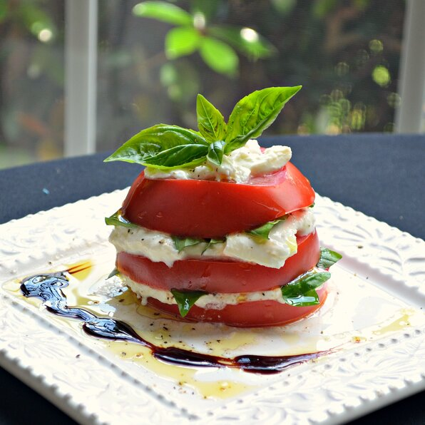

Tomato and Burrata Stacks

Perfect stack for a summer day
Beautiful, decadent and declious... quick and easy too! Pair your sliced tomato with burrata in this stack recipe.
Ingredients
- 1 tomato
- flaked sea salt
- ground black pepper
- 1/4 cup burrata cheese
- fresh basil leaves
- 1 tablespoon extra-virgin olive oil
Steps
- Core tomato and cut into 1/2 inch slives
- Plate bottom tomato slice and season with salt and pepper
- Spread burrata over tomato slice and top with basil leaves
- Drizzle with olive oil
- Add next tomato slice on top
- Repeat previous steps until stack is three tomato slices tall
- Finish top tomato slice with burrata and basil leaves